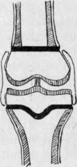

The Semilunar Fibro-Cartilages
Description
This section is from the book "Surgical Anatomy", by John A. C. MacEwen. Also available from Amazon: Surgical Anatomy.
The Semilunar Fibro-Cartilages
The semilunar Fibro-Cartilages, roughly triangular in section, deepen the articular surfaces on the head of the tibia, the base being turned toward the capsule to which it is attached, while the free apex projects inwards. The lower margin of the base is attached to the head of the tibia by coronary ligaments, and the upper and lower surfaces and free edge are covered by synovial membrane. The external forms almost a complete circle, being attached in front and behind to the tibial spine, while the internal, forming barely a semicircle, is attached in front of and behind the spine, the two cartilages being connected anteriorly by a transverse ligament. These cartilages, and particularly the internal one, are not infrequently dislocated, or broken through, by injury, especially a twist when the limb is slightly flexed, the movement in rotation being said to take place between the semilunar cartilage and the tibia. It is also said that external rotation favours displacement of the internal cartilage, and vice versa. As a result of the accident, the knee frequently becomes locked in a flexed position.
The synovial membrane lines the capsule of the joint, and is reflected at its insertions on to the epiphyses of the bones, on which it extends to the margins of the articular cartilages. It covers the semilunar cartilages and the infrapatellar pad of fat, from which latter it extends inwards and upwards to the anterior part of the intercondyloid notch, forming the ligamentum mucosum, and also extends inwards, and covers the crucial ligaments. The ligamentum mucosum, and the coverings of the crucial ligaments, together form an incomplete septum along the intercondyloid notch, dividing the joint into two lateral compartments. The so-called ligamenta alaria are delicate lateral folds, running from the ligamentum mucosum to the margins of the patella. Superiorly, under the quadriceps, the synovial membrane is not reflected at once on to the epiphysis, but extends up in front of the diaphysis, forming the suprapatellar pouch to a point fully 1 inch above the upper margin of the patella, where it frequently communicates with the subcrureal bursa before it is reflected. Thus, in the extended position, a wound in the front of the femur, 2 inches above the upper border of the patella, may involve the joint. In flexion the pouch is drawn slightly downwards. The tendon of the popliteus muscle is in contact with the membrane in its intra-articular portion, and through the bursa between it and the head of the tibia the knee-joint may communicate with the superior tibio-fibular joint.
The lower extremity of the femur ossifies from a single centre, which appears before birth, and joins the shaft about the twentieth year. The epiphyseal line is roughly horizontal, and the adductor tubercle forms a convenient guide to its position, the line running just above the tubercle. The plane of the articular surfaces of the femoral condyles is also horizontal when the femur is in its normal position, with the shaft extending downwards and slightly inwards. The inner condyle is the narrower, and anteriorly, above the condyles, the articular surfaces coalesce to form the trochlear surface, which is more prominent, and ascends higher, on the outer than on the inner border. Over this trochlear surface the patella glides. When the limb is extended, the apex of the patella is just on a level with the upper surface of the tibia, and the upper margin of the patella reaches the level of the epiphyseal line. In slight flexion the patella rises slightly in reference to the head of the tibia, but in relation to the femur descends as flexion increases, till in full flexion the articular surface of the patella is opposite the intercondyloid notch. In flexion the bone is wedged against the trochlear surface, so that but little lateral movement is permitted. The lower epiphysis of the femur may be separated, or a T-shaped fracture involving the joint may occur, or one or other condyle may be separated.
Fig. 40.-Diagram of Knee-Joint of Adolescent.
Shafts of bones shaded obliquely ; epiphyseal plates black ; articular cartilages shaded vertically.
Note that periosteum of shaft stops at epiphyseal plate to which it is firmly attached.
Note that synovial membrane commences at edge of articular cartilage and runs up over epiphysis, but is quite distinct and cut off from the periosteum ; further, that it covers the crucial ligaments.
The head of the tibia is also developed from a single centre, appearing shortly before birth, which joins the shaft about the twenty-second year. The epiphyseal line runs roughly horizontally, just below the tuberosities, and including the articular facet for the fìbula and depression for insertion of semimembranosus tendon, while in front it dips down to include the tubercle. The head of the tibia is practically divided into two lateral articular surfaces by the spine, and extending from it forwards and backwards are two wedge-shaped rough areas, which give attachment respectively to the anterior and posterior cornua of the semilunar cartilages and the crucial ligaments. The upper third of the tibia is the part of the bone least subject to fracture. Either tuberosity may be broken off, or a transverse or oblique fracture of the upper third of the shaft may be associated with a vertical one running up into the joint between the tuberosities.
The epiphyseal plates of the long bones deserve attention surgically for several reasons. They are ill-developed in infancy, become very marked during the actively growing period up to seventeen or eighteen, and disappear later. They separate the shaft, or diaphysis, from the extremity,or epiphysis, and, as they are extremely resistant structures, they tend to confine the various affections to the part from which they originate. Thus, tubercle and giant-celled sarcoma generally affect the epiphyses, and particularly those now under consideration-the lower femoral and upper tibial. The epiphyseal plates form resistant barriers to these diseases, and are frequently successful in limiting them to the epiphyses. Acute osteomyelitis, on the other hand, is a pyogenic invasion of the bone-marrow of the shafts, or diaphyses, of long bones, the infection being conveyed by the blood-stream, which most frequently affects the lower end of the femoral shaft, or upper end of the tibial shaft. The pus formed seeks an exit, and tends to invade the knee-joint, and generally succeeds in doing so in infancy and in adults. In adolescence, however, where the epiphyseal plate forms a barrier, the joint is protected, and the pus is forced to seek exit between the end of the shaft and the epiphysis, or through the Haversian canals of the shaft, causing inflammation of the bone, or osteitis, as it does so. Arrived on the outer surface of the shaft of the. bone, it lies under the periosteum, another structure of considerable surgical importance.
Continue to:
- prev: The Lateral Dislocations Of The Patella
- Table of Contents
- next: The Semilunar Fibro-Cartilages. Continued